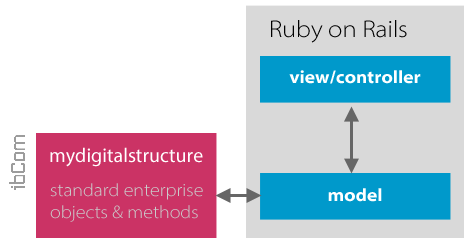

GETTING STARTED
|
| Guides | Guides for Rails |
| About Ruby on Rails | Ruby on Rails, often shortened to Rails, is an open source full-stack web application framework for the Ruby programming language. Ruby on Rails is not to be confused with Ruby, which is a general-purpose programming language, on which Ruby on Rails runs. |
| Sample AJAX App | Example of how to interact with an API using Rails - this can be modified to work with mydigitalstructure.com API. |
| Archiloque / rest-client | Simple HTTP and REST client for Ruby. |
| Nestful REST Client | Simple Ruby HTTP/REST client with a sane API. |
| Sinatra | Sinatra is a DSL for quickly creating web applications in Ruby with minimal effort: |

See also:
 |
| rubyonrails.org |